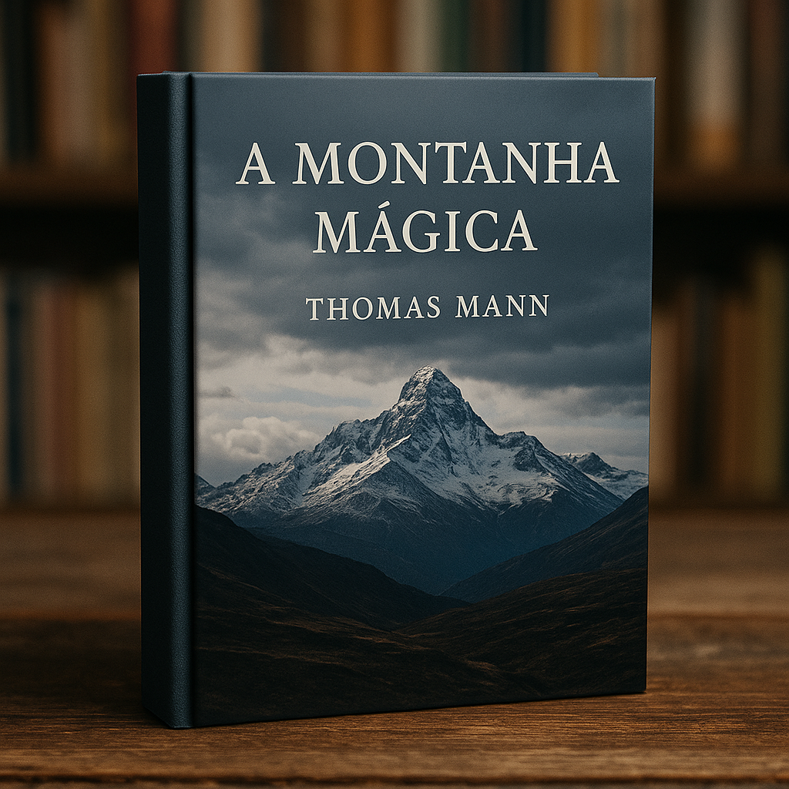
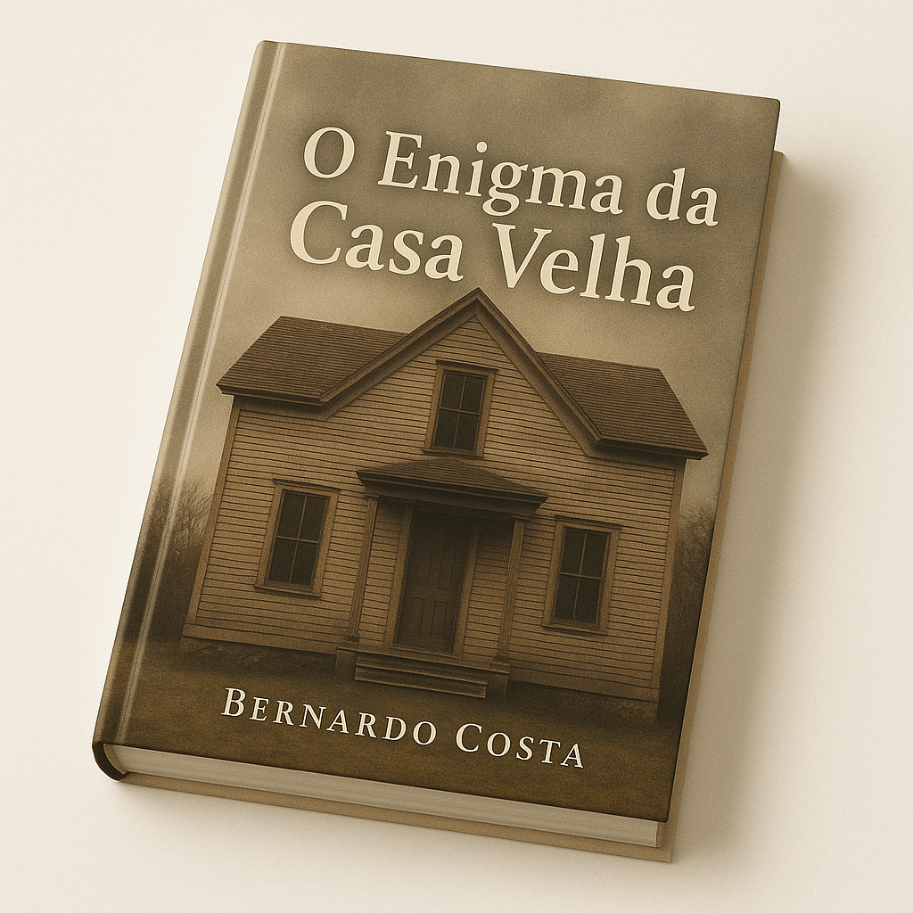
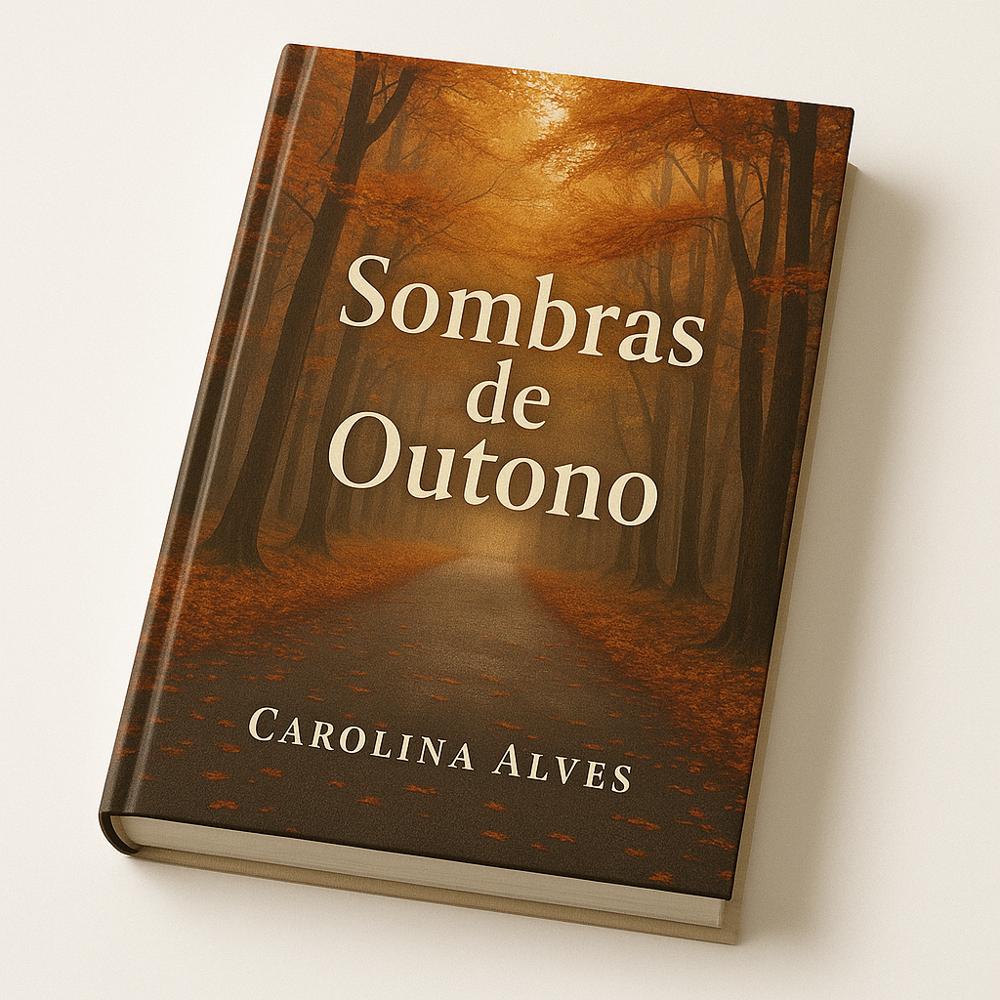

Produtos
-

A Montanha Mágica
Autor: Thomas Mann
Ano de publicação: 1924
Número de páginas: 720 -

O enigma da Casa Velha
Autor: Bernardo Costa
Ano de publicação: 2021
Número de páginas: 312 -
Ecos do Silêncio
Autor: Mariana Tavares
Ano de publicação: 2018
Número de páginas: 415 -

Sombras de Outono
Autor: Carolina Alves
Ano de publicação: 2022
Número de páginas: 258 -
A Montanha Mágica
Autor: Thomas Mann
Ano de publicação: 1924
Número de páginas: 720 -
O enigma da Casa Velha
Autor: Bernardo Costa
Ano de publicação: 2021
Número de páginas: 312 -
Ecos do Silêncio
Autor: Mariana Tavares
Ano de publicação: 2018
Número de páginas: 415 -
Sombras de Outono
Autor: Carolina Alves
Ano de publicação: 2022
Número de páginas: 258